1040B32 front fuel delivery line - r r
- Path
- Procedures > 10 ENGINE > 1040 FUEL TANK AND PIPES > 1040B fuel supply/return circuit pipe > 1040B32 front fuel delivery line - r r
- Kind
- repair procedure (removal / refitting; the operation number is the code)
- Applies to
- engines: 1.6 TS , 1.8 TS, 2.5 V6, 3.2 V6, 1.9 JTD 8v , 1.9 JTD 16v, 2.4 JTD 10v, 2.4 JTD 20v; all production periods
- Interactive page
- https://sloeber94.github.io/elrnDB-a156/en/#/3237521
Applies to: engines: 2.5 V6, 3.2 V6; all production periods
 Removing
Removing
 Refitting
RefittingPosition the vehicle on the ramp.
Ensure that the ignition key is in the stop position, then disconnect the battery negative terminal.
 | Name | Connector |
|---|---|---|
- | Battery |
1. Loosen collars (1a) and remove the air intake pipe from the debimeter to the throttle body (1b). Release the pipe from the oil vapour recirculation pipe.
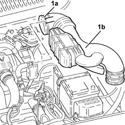
Applies to: engines: 2.5 V6, 3.2 V6; all production periods
1. Undo the plugs for the fuel manifold and drain the pressure from the fuel system via the valves.
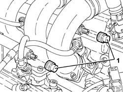
Applies to: engines: 2.5 V6, 3.2 V6; all production periods
1. Undo the connector (1a) and disconnect the fuel supply pipe from the manifold (1b).
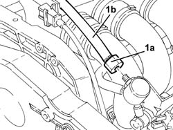
Applies to: engines: 2.5 V6, 3.2 V6; all production periods
1. Undo the bolts (1a) and remove the protections (1b) for the fuel outlet pipes and fuel vapour recovery pipes.
2. Disconnect the rapid attachment for the front fuel supply pipe from the rear pipe.
3. Release the front fuel supply pipe (3a) from the fixings under the body (3b).
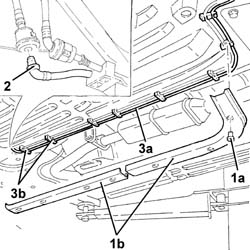
Applies to: engines: 2.5 V6, 3.2 V6; all production periods
1. Release the front fuel outlet pipe (1a) and fuel vapour recovery pipe (1b) from fastening (1c).
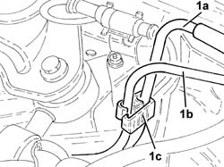
Applies to: engines: 2.5 V6, 3.2 V6; all production periods
Continue with the removal 1008C10 power unit upper reaction link r r .
1. Undo nut (1a) and remove wheel rpm sensor electrical connection bracket (1b).
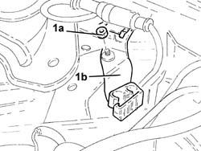
Applies to: engines: 2.5 V6, 3.2 V6; all production periods
Release the front fuel supply pipe from the remaining fastenings on the engine bulkhead and remove.
Applies to: engines: 2.5 V6, 3.2 V6; all production periods
Refitting
RemovingPlace the front fuel supply pipe back in its housing.
Remove the wheel rpm sensor electrical connection bracket and secure with a nut.
Continue with the refitting 1008C10 power unit upper reaction link r r
Secure the front fuel delivery pipe and the fuel vapour recovery pipe to the fastenings on the engine bulkhead.
Fix the front fuel supply pipe to the underbody fixings.
Connect the front fuel outlet pipe quick-release fitting to the rear fitting.
Refit the protections for the fuel outlet hose and fuel vapour recovery hose and secure with bolts.
Connect the fuel supply pipe to the manifold and fix it using the connector.
Refit the air inlet pipe from debimeter to throttle body and secure with collars.
Connect the battery terminal (-).
Remove the car from the ramp.
Applies to: engines: 1.6 TS ; all production periods
Removing
RefittingPlace the car on a ramp.
1016A40 ignition coil cover on cylinder head- r+r
1. Disconnect the fuel supply pipe from the fuel manifold and release it from the retaining bands.
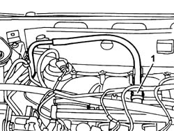
Applies to: engines: 1.6 TS ; all production periods
Raise the vehicle.
1. Remove the plastic protections for the fuel supply and return pipes and for the anti-evaporation system pipe from the lower part of the vehicle.
2. Release the fuel supply pipe from the retaining bands.
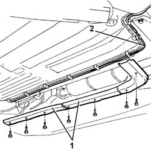
Applies to: engines: 1.6 TS ; all production periods
1. Disconnect the rapid connector for the two sections of the fuel supply pipe, then remove the front section of the actual pipe.
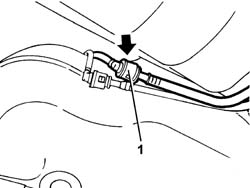
Applies to: engines: 1.6 TS ; all production periods
Refitting
RemovingConnect the rapid connector for the front section with the rear section of the fuel supply pipe.
Secure the front section of the fuel supply pipe using the retaining bands on the underbody.
Fit the plastic protections for the fuel supply pipe and the anti-evaporation system pipe.
Lower the vehicle and pass the pipe inside the engine compartment and secure it using the retaining brackets.
Connect the front section of the fuel supply pipe to the manifold.
Applies to: engines: 1.9 JTD 8v , 2.4 JTD 10v; all production periods
Removing
Refitting4450B10 Front WHEEL (one) - R.R.
7055B64 Engine compartment DUST shield in front wheel arch (one), left or right - R.R.
1. Disconnect the front fuel supply pipe (1a) from the filter and release it from the bands (1b) on the engine compartment bulkhead.
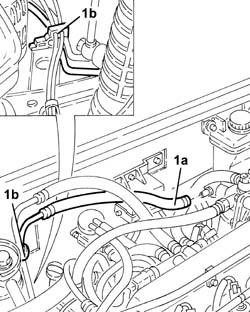
Applies to: engines: 1.9 JTD 8v , 2.4 JTD 10v; all production periods
Raise the car.
1. Undo the bolts (1a) and remove the protection (1b) for the fuel pipes.
2. Disconnect the intermediate coupling for the front fuel supply pipe to the filter.
3. Release the front fuel supply pipe from the bands and remove it via the right front wheel arch.
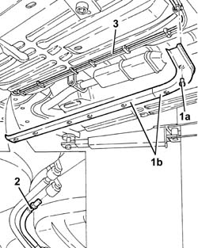
Applies to: engines: 1.9 JTD 8v , 2.4 JTD 10v; all production periods
Refitting
RemovingPlace the front fuel supply pipe back in its housing and fix it using the bands.
Connect the intermediate coupling for the front fuel supply pipe to the filter.
Fit the protection for the fuel pipes and fix them using the bolts.
Lower the vehicle.
Connect the front fuel supply pipe to the filter and fix it using the bands to the engine compartment bulkhead.
7055B64 Engine compartment DUST shield in front wheel arch (one), left or right - R.R.
Applies to: engines: 1.9 JTD 16v; all production periods
Removing
RefittingPosition the vehicle on the ramp.
Proceed with removal 1016A10 sound-proofing cover - r + r .
1. Undo bolts (1a) and remove protection (1b).
2. Disconnect the quick-release connector for the front fuel supply pipe, rear fuel supply pipe side.
3. Release the front fuel supply pipe from the fixings under the body.
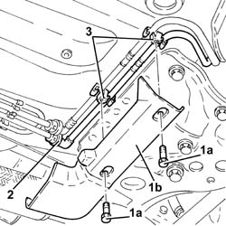
Applies to: engines: 1.9 JTD 16v; all production periods
1. Disconnect the quick-release connector for the front fuel supply pipe, fuel filter side.
2. Release the front fuel supply pipe (2a) from the remaining fastenings (2b) on the engine bulkhead and remove it.
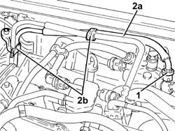
Applies to: engines: 1.9 JTD 16v; all production periods
Refitting
RemovingPlace the front fuel supply pipe back in its housing and fix it on the engine bulkhead using the bands.
Connect the quick-release connector for the front fuel supply pipe, fuel filter side.
Fix the front fuel supply pipe to the underbody fixings.
Connect the quick-release connector for the front fuel supply pipe, rear fuel supply pipe side.
Place the protection back in its housing and secure it using the bolt.
Proceed with refitting 1016A10 sound-proofing cover - r + r .
Remove the car from the ramps.
Applies to: engines: 2.4 JTD 20v; all production periods
Removing
RefittingPosition the vehicle on the ramp.
Proceed with removal 4450B04 right front wheel r r .
Proceed with removal - 7055B91 Right front WHEEL ARCH LINER - R.R. .
1. Disconnect the quick-release connector on the front fuel supply pipe (1a), fuel filter side, and release it from the bands (1b) on the engine compartment bulkhead.
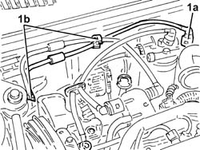
Applies to: engines: 2.4 JTD 20v; all production periods
1. Undo bolt (1a) and remove the protection (1b).
2. Disconnect the quick-release connector for the front fuel supply pipe, rear fuel supply pipe side.
3. Release the front fuel supply pipe from the bands and remove it via the right front wheel arch.
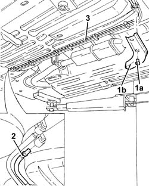
Applies to: engines: 2.4 JTD 20v; all production periods
Refitting
RemovingPlace the front fuel supply pipe back in its housing and fix it using the bands.
Connect the quick-release connector for the front fuel supply pipe, rear fuel supply pipe side.
Place the protection back in its housing and secure it using the bolt.
Connect the quick-release connector on the front fuel supply pipe, fuel filter side, and fix it using the bands to the engine compartment bulkhead.
Proceed with refitting - 7055B91 Right front WHEEL ARCH LINER - R.R. .
Proceed with refitting 4450B04 right front wheel r r .
Remove the car from the ramps.
Topics linked from this page (7)
- 1008C10 power unit upper reaction link r r
- 1016A10 sound-proofing cover - r + r
- 1016A40 ignition coil cover on cylinder head- r+r
- 4450B04 right front wheel r r
- 4450B10 Front WHEEL (one) - R.R.
- 7055B64 Engine compartment DUST shield in front wheel arch (one), left or right - R.R.
- A1B Battery ( BATTERY NEGATIVE )